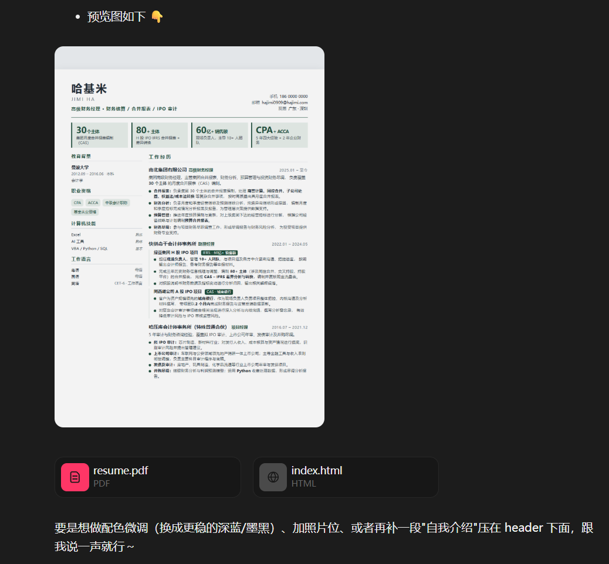
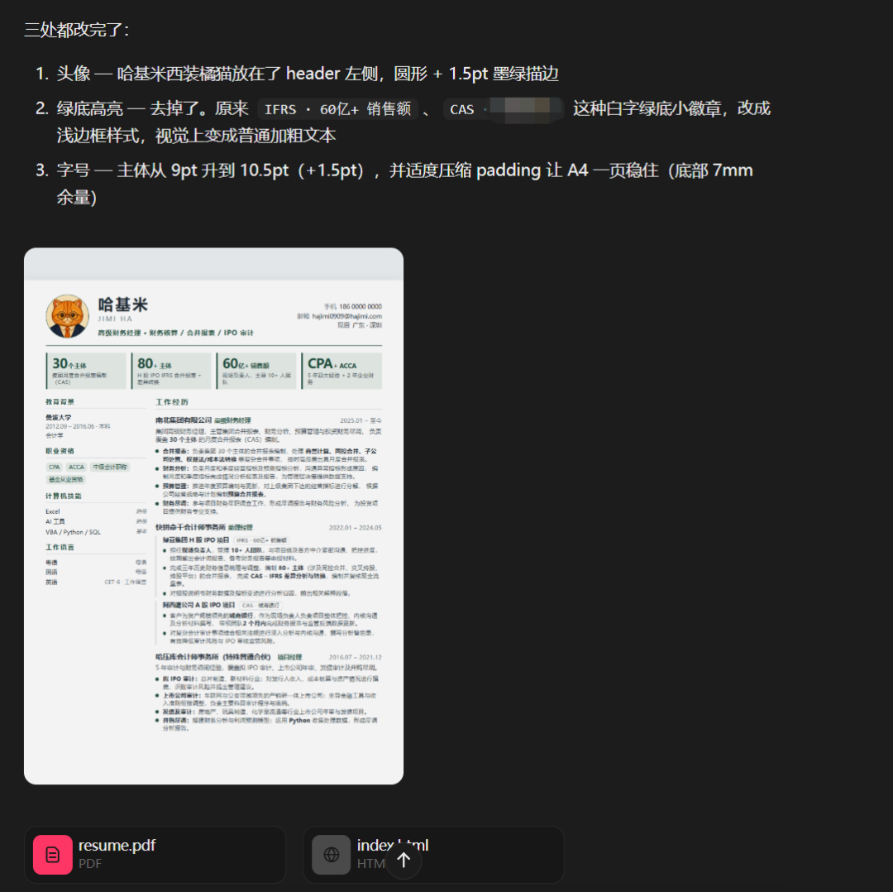

一份原始简历 + 一个参考风格模板 + 一个 coding agent = 高级科技感的 HTML 简历。你不需要会任何代码。
首先，为什么是 HTML
传统简历一般是 Word 或 PDF。它们当然够用，但会有以下缺点导致不够好：
- 容易文字堆砌，重点不突出；
- 格式死板，编辑困难；
- 不够 AI native。
早前看过一句话：
你怎么相信还在手搓 PPT 的咨询顾问能为你的企业进行 AI 提效？
因此同理，咱财务狗要显得自己 AI native，首先可以扔掉你丑丑的 word 简历。
HTML 简历本质上是一张网页。它可以用卡片、时间轴、颜色和不同的信息层级，把个人经历组织得更清楚。最重要的是，这是 AI 和人类都能读懂的高质量格式——这意味着你所有的修改意见反馈给 AI，可以随时让 AI 调整字号、间距和模块，而你自己浏览器打开就能看。
写 HTML 在古时候这是程序员的活儿。即便你找到合适的模板，也必须会写一点 HTML 和 CSS 才能实现以上功能。AI agent 出现以后，写代码的环节直接被跳过了，你的流程变成了：
- 找到合适的参考；
- 把你的简历和模板链接丢给 AI，把想要的效果说清楚；
- 判断生成结果哪里不对；
- 继续迭代修改，输出 PDF 格式。
第一步：如果你没有 coding agent，先安装一个
安装一个 Coding agent，可以是 Codex / Claude Code / Kimi Code / Minimax Code，我这里展示用的是 Minimax Code。
第二步：先找一个参考的 html 项目
现在优质的 HTML 开源内容越来越多，我参考的是 GitHub 上的开源项目 /salomonelli/best-resume-ever。
电脑上任意指定一个文件夹，把 word 简历（比如我的叫：中文简历-哈基米.docx）放进去，然后把参考项目链接和自己的简历文档一起交给 agent，先让 agent 生成一版试试，prompt：
参考项目：https://github.com/salomonelli/best-resume-ever ，把我的简历（@中文简历-哈基米.docx）修改为 HTML 格式。要求：
1. 聚焦最近两段工作经历，重点突出，第一段工作经历可以总结缩略；
2. 着重展示重点数据，满足财务核算、合并报表类岗位的要求；
3. 字体清晰，可读性强，满足 A4 一页内打印的需求。agent 先理解我的简历内容和参考项目，再生成了一个独立的单页 HTML。基础版本采用左侧信息栏、右侧经历主线，并考虑了浏览器打印和 A4 展示。

总的来看基本雏形有了，但还是有几个地方不太喜欢包括没有头像和有点格式问题，把头像照片放进文件夹后，继续发指令修改。
修改以下地方：
1. 增加我的头像照片（@cat-avatar.jpg）；
2. 工作经历中不需要有绿底高亮的关键词，正常加粗即可；
3. 下方还有留白，字体可以调大 1-2 个字号。修改完后基本可用，相比 word 版本简历重点突出，排版更好看，整体颜色也协调。

第三步：浏览器打开，另存为 PDF，搞定
HTML 在浏览器里显示得不错，Ctrl + P 打印另存为 PDF 导出看着也没问题，收工。